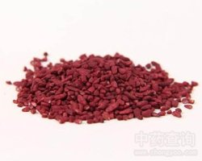

红曲

拼音
Hónɡ Qū
别名
红曲霉、紫红曲霉、红大米、红糟
来源
真菌类子囊菌纲曲霉目曲霉科红曲Monascus purpureus Went.，以菌丝体及孢子入药。
生境分布
生态环境：此菌在自然界多存在于乳制品中，亦可用粳米作培养基进行人工培养，使之成红曲米。 资源分布：分布于河北、江西、浙江、台湾、福建、广东等地。
药材特点
菌丝体大量分枝，初期无色，渐变为红色，老后紫红色；菌丝有横隔，多核，含橙红色颗粒。成熟时在分枝的顶端产生单个或成串的分生孢子。分生孢子褐色，（6-9）μm×(7-10)μm。在另外菌丝顶端还产生橙红色单个球形子囊壳(闭囊壳)；闭囊壳橙红色，近球形，直径25-75μm，内含多个子囊。子囊球形，含8个子囊孢子，成熟后子囊壁消失。子囊孢子卵形或近球形，光滑，透明，无色或淡红色，(5.5-6)μm×(3.5-5)μm。
性状
为不规则形的颗粒，状如碎米；外表棕红色，质脆，断面粉红色，微有酸气，味淡，以红透质酥，陈久为佳。我国大部分地区有产，主产福建、广东。
性味
甘，温。
功能主治
消食和胃，活血止痛，健脾，燥胃。用于饮食停滞，胸膈满闷，消化不良。
用法用量
2～3钱，水煎服。
化学成分
无化学成分
药理作用
1：红曲发酵后可分离到辅酶Q10：辅酶Q10又名癸烯醌，是细胞代谢及细胞呼吸的激活剂，能改善线粒体呼吸功能，促进氧化磷酸化反应
2：它本身又是细胞自身产生的天然氧化剂：能抑制线粒体的过氧化，有保护生物膜结构完整性的功能
3：对免疫有非特异的增强作用：能提高吞噬细胞的吞噬率，增加抗体的产生，改善T细胞功能
摘录
《全国中草药汇编》